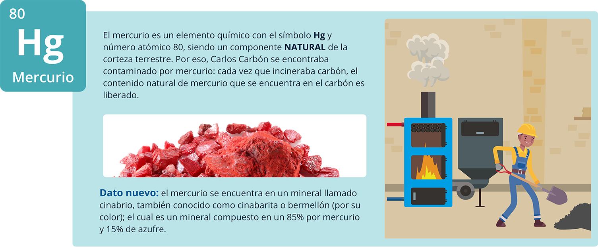
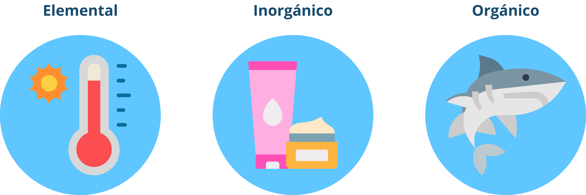
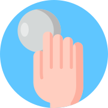

Introducción
Para empezar, queremos contarles que en los últimos años se han liberado (al ambiente) aproximadamente 4.400 toneladas de mercurio por año y emitido (a aguas y suelos) aproximadamente 8.300 toneladas de mercurio provenientes de diferentes actividades naturales y humanas (UNEP, 2019).
Colombia es el cuarto país que más emite mercurio y el primero per cápita en todo el mundo; tales emisiones significativas provienen principalmente del uso descontrolado del mercurio en la minería de oro artesanal y a pequeña escala (Davis, 2014).
En esa medida, los retos que el país afronta en cuanto a la reducción de los impactos que el mercurio puede causar en la salud humana y el ambiente hacen necesario que diferentes actores nos involucremos y promovamos múltiples acciones ambientales, educativas, mineras, de salud y de género.
¿Están dispuesto/a a asumir este reto?
Los invitamos a hacer parte del grupo que hará de Colombia un territorio libre de mercurio.
Por esto, queremos invitarlo a ver el video Historia del sombrerero loco.
1. Conceptos iniciales sobre el mercurio
1.1 Terminología Básica sobre el mercurio y su presencia en la historia de la humanidad
A partir de la historia anterior, podemos definir los primeros conceptos del mercurio, veamos algunos:
Por otro lado, entendimos que el mercurio puede ser liberado por actividades humanas, también llamadas ANTROPOGÉNICAS, como por ejemplo cuando el mercurio era utilizado para la fabricación de los sombreros de Eduardo; esta actividad fue prohibida en 1940.
Es importante que recuerden la palabra <
Finalmente, conocimos unas de las propiedades más importantes del comportamiento del mercurio: la BIOACUMULACIÓN, es decir la capacidad de concentrarse en seres vivos y provocar EFECTOS TÓXICOS de muy diverso carácter.
Un ejemplo de esto lo observamos en Lola, quien respiraba con frecuencia y por periodos prolongados, los vapores de mercurio provenientes de la actividad laboral de Eduardo.

Este mercurio se acumuló lentamente en el cuerpo de Lola, y le causó algunos efectos como: tos, inflamación de las encías, pérdida dental e infertilidad
Biomagnificación: ¿cuáles animales observan? ¿qué sucede con los niveles de contaminación?
Los niveles de contaminación se trasladan entre especies a través de la cadena alimentaria.
Bioacumulación: ¿cómo se comporta el nivel de contaminante en cada pez?
A medida que pasa el tiempo los niveles de contaminación aumentan, bien sea con la edad o el peso del pez.
Para completar el proceso sobre conceptos básicos del mercurio es necesario leer la hoja de datos que se encuentra en el material complemtario Información básica para estudiantes planteado por: Agency for Toxic Substances and Disease Registry (ATSDR), 2018.
Hechos históricos sobre el mercurio
Como lo hemos visto, el mercurio tiene propiedades únicas que lo han hecho muy útil en el desarrollo de la civilización humana. Los invitamos a ver la siguiente línea de tiempo sobre los hechos históricos más conocidos sobre el mercurio.
Primera aparición del mercurio
El mercurio fue descubierto en el año 1500 antes de Cristo, este fue utilizado como pigmento rojo brillante por los pintores paleolíticos de hace 30.000 años para decorar cuevas en España y Francia. El Cinabrio cedía su mercurio simplemente al calentarlo en un crisol y el metal fascinaba a la gente por su propiedad de disolver el oro (Royal Society of Chemistry, 2020).
Imperio Inca, Perú 1200-1533
Según los cronistas, LOS INCAS no permitieron a los indígenas extraer azogue o cinabrio por el peligro que implicaba el veneno que desprendía, pudiendo causar hasta la muerte; no obstante, cuando se excava una tumba Inca, se encuentran restos de polvo de cinabrio, el cual se esparcía durante los ritos de enterramiento, con el objeto de que causará el envenenamiento de quienes la profanarán (la inhalación del aire resulta altamente tóxica) (Vetter, 2007).
Nueva España, México 1521
El mercurio en el proceso de la colonización española en México.
Algunos escritos de la época de la colonización española en México evidencian la presencia de una enfermedad extraña en los indígenas que eran sometidos a la minería de oro: “el minero con el contacto y manejo del azogue (palabra que se usa para referirse al mercurio) se pone trémulo y casi inservible … si algún humo de aquél proveniente del azogue llega a ellos, se mueren, quedan muy maltratados o pierden los dientes” (West, 1949).
Potosí, Bolivia 1571
La explotación minera de Potosí se constituyó en la máxima preocupación del Virrey don Francisco de Toledo, quien la consideró la fuente de ingresos de la hacienda de su majestad. Para ello, diseñó sus reformas, que consolidaban el gobierno y disciplinamiento indígena y organizaban los repartimientos para proveer al centro minero de un flujo constante de mano de obra. Más allá de ello, el abastecimiento de mercurio constituyó otro de los esfuerzos organizativos del virrey, quien conocía la dependencia de la nueva metodología de amalgamación del flujo sostenido del azogue (Presta, 2105).
Minería de cinabrio en Colombia 1800
Desde el año 1800 se identificaron los siguientes yacimientos de mercurio en Colombia: Caldas (Aránzazu), Nariño (Santa Cruz, La Unión, La Cruz, Samaniego y Santa Bárbara), Valle del Cauca (Sevilla, Tuluá y Bugalagrande), Tolima (Cajamarca y Rovira), Quindío (Calarcá), y Boyacá (Nobsa). Sin embargo, la literatura relaciona la explotación de dos de ellas por las condiciones de calidad y cantidad: Aránzazu, y Cajamarca. Las cantidades de mercurio de esta actividad minera abasteció la fabricación de luminarias para el alumbrado público, la planta colombiana de soda y la industria química nacional.
Las explotaciones de la mina en Aránzazu se desarrollaron en el período 1957 -1987, su cierre se debe a problemas de salud de los empleados; la de Cajamara operó entre 1887 y 1923 (UPME, 2014).
Francia y Estados Unidos 1812
Por entonces, era frecuente dar a los niños unos "polvos dentales" (del inglés teething powders) durante el periodo de crecimiento de sus dientes, ya que estos les calmaban y se consideraba beneficioso para ellos. También se les solían asociar otras bondades como mejorar el tránsito intestinal o evitar los parásitos. Estos polvos fueron usados desde 1812 y contenían cloruro de mercurio (calomel).
Sin embargo, el uso de estos polvos no era beneficioso, algunos periódicos publicaron en sus titulares: “El mercurio se consideró una cura hasta que nos mató”. Durante más de 100 años se presentó en los niños una epidemia caracterizada por: manos y pies rosados, insomnio, dolor en las extremidades, sudoración, descamación de la piel, aflojamiento y/o pérdida de dientes. Nace así la Acrodinia o enfermedad de Feer, enfermedad Rosada o enfermedad de Swift (Echeverria, 1931).
Amalgamas dentales 1819 y 1826
1819: El químico inglés Bell inventó un relleno de amalgama dental a base de mercurio, con el objetivo de restaurar los dientes fracturados o con problemas de caries.
1826: El relleno de mercurio de la amalgama dental se utilizó por primera vez en Inglaterra y Francia.

Francia, Inglaterra y Estados Unidos 1849
En el siglo 19, los sombrereros comenzaron a tratar la piel del castor con mercurio para suavizarla, y así elaborar los sombreros.
La primera descripción clínica de intoxicación por mercurio en sombrereros fue publicada en 1860, entre los síntomas más tempranos se encontraban las parestesias (hormigueos), y entre los casos más avanzados la ataxia, reducción del campo visual, disartria, alucinaciones y otros tantos.
Primero en Francia e Inglaterra y mucho más tarde en Estados Unidos, fue prohibido el uso de nitrato de mercurio en la industria de los sombreros. Para la mayor parte de la gente, permaneció durante mucho tiempo como una enfermedad de origen desconocido, y a los afectados simplemente se les calificaba como dementes o locos (Freeman, 1860).
Minamata, Japón 1932
La bahía del Minamata hace parte de la ciudad costera del mismo nombre, localizada en la ciudad de Kumamoto, isla de Kyushu de Japón, en la cual operaba la compañía Chisso Corporation, que entre 1932 y 1968 vertieron en esa bahía unas 27 toneladas de compuestos de mercurio, utilizado en la producción de acetaldehído.
Resultado de ese vertimiento: más de 2.500 personas empezaron a sufrir de un desorden neurológico llamado la Enfermedad de Minamata (Prefectura de Kumamoto, 2019).
Desastre del grano envenenado
Situación de crisis de salud, producida por un cargamento de semillas de trigo que habían sido tratadas con mercurio orgánico como fungicida (Bakir, y otros, 1973).
- Irak 1956. En Irak, las víctimas fueron agricultores y sus familiares. La epidemia pudo afectar a unas 50.000 personas, aunque sólo 6.530 fueron admitidas en hospital como envenenados. 459 muertes en los hospitales fueron atribuidas al envenenamiento por mercurio.
- Guatemala 1963. En Guatemala, fueron reportadas 45 personas afectadas, y 20 muertos. Inicialmente fueron considerados como pacientes con encefalitis, posteriormente se determinó que el agente causante fueron las semillas de trigo tratadas con metilmercurio
- Pakistán 1969. Eventos similares a los ocurridos en Irak fueron reportados en Pakistán, las víctimas fueron agricultores y sus familiares.
Canadá - Grassy Narrows, 1975
Generación tras generación de la comunidad indígena de Grassy Narrows, han visto su crisis dolorosamente prolongada. Han pasado casi 50 años desde la revelación de que su pescado había sido envenenado por toneladas de mercurio vertido en su sistema fluvial por una fábrica de papel propiedad de Reed Paper Ltd., en la ciudad de Dryden, en el norte de Ontario.
Estudios recientes de la científica Donna Mergler, con sede en Montreal, han encontrado pruebas contundentes, de análisis de sangre del cordón umbilical y encuestas comunitarias, que confirman que el daño por mercurio persiste de madres a hijos. Un estudio halló que los niños de Grassy Narrows tienen cuatro veces más probabilidades de sufrir problemas de aprendizaje o trastornos del sistema nervioso si sus madres hubieran consumido pescado regularmente durante sus embarazos (The Globe and Mail, 2019).
Origen del convenio de Minamata 2001 (PNUMA,2017)
- Entre el 2001 y el 2013 se discutió la necesidad y el marco regulatorio para proteger la salud humana y el medio ambiente de las emisiones antropogénicas y las liberaciones de mercurio y compuestos de mercurio.
- El 10 de octubre de 2013, se firmó el convenio de Minamata para cumplir este objetivo.
- 2018. Se aprueba la aplicación del “Convenio de Minamata sobre el mercurio” en Colombia por medio de la Ley 1892 de 2018.
Para poder apropiarnos de algunas enseñanzas que nos dejan estas historias, a continuación, encuentra una actividad interactiva sobre la historia del mercurio.
Actividad didáctica: enseñanzas de historia del mercurio.

Para poder apropiarnos de algunas enseñanzas que nos dejan estas historias, a continuación, encuentra una actividad didáctica sobre la historia del mercurio.
IniciarUsos del Mercurio
Acabamos de ver algunos usos del mercurio que fueron surgiendo en la historia de la humanidad, sin embargo, existen otros que exploraremos a continuación, por ello es necesario que realice la actividad de aprendizaje Procesos y Productos en donde encontrará unas preguntas de identificación de productos y procesos con mercurio añadido.
Actividad didáctica: procesos y productos con mercurio añadido.
Lo invitamos a realizar la siguiente actividad didáctica que le ayudará a afianzar su proceso de aprendizaje.
Iniciar¿Qué cree que tienen en común los elementos vistos anteriormente? ¿y qué es diferente?
El mercurio, así como otros elementos químicos puede presentarse en diversas formas dependiendo de las alianzas que haga con otros componentes. Es así que estos compuestos de mercurio le añaden, le restan o le cambian algunas propiedades, facilitando su aparición en diversas aplicaciones.
Cuando hablamos del mercurio en su estado simple o más puro, hablamos de mercurio elemental o metálico, utilizado en los termómetros de vidrio o tradicionales y su símbolo se conoce como Hg.
También, tenemos el mercurio orgánico, uno de los compuestos más conocidos dado que se puede encontrar en peces en su forma de metilmercurio como MeHg o [CH3Hg]+
Finalmente, el tercer tipo de mercurio es: el inorgánico conocido como sales de mercurio y por lo general son cristales o un polvo de color blanco. Lo encontramos en algunas cremas aclaradoras y otros productos como: sulfuro de mercurio (HgS) o el óxido de mercurio (HgO).
1.2 Introducción al comportamiento ambiental del mercurio
Idea 1
El mercurio puede ser emitido y liberado al ambiente.
Emisión.
La Emisión es una descarga de una sustancia o elemento al aire, en estado sólido, líquido o gaseoso, o en alguna combinación de estos, provenientes de una fuente fija o móvil. En este caso, es la descarga del mercurio al aire.
Liberación.
En el marco del convenio de Minamata, se interpretó a las liberaciones como las descargas del mercurio en sus diferentes formas al agua o al suelo.
Idea 2
A través de fuentes naturales y antropogénicas.
Fuentes naturales.
Podemos encontrar mercurio en el ambiente debido a algunas fuentes naturales que lo emiten, como la actividad volcánica, la quema de biomasa (incendios forestales), los yacimientos naturales de mercurio (como el de Almadén, España) y el ciclo en general del suelo y la vegetación.
Fuentes antropogénicas.
Mientras que, en otros casos, el mercurio es emitido o liberado al ambiente por causa de actividades humanas, como son: el inadecuado manejo de residuos de productos con contenido de mercurio, la minería de oro que utiliza mercurio (como la artesanal), la producción de cemento, las plantas de producción de energía a partir de carbón, y entre otras.
Idea 3
Que pueden ser o no intencionales.
Fuentes intencionales.
Son aquellas en las que se utiliza este metal con el fin de desarrollar un proceso productivo o producir un producto con mercurio añadido.
Fuentes no intencionales.
Son aquellas en las que se realiza una emisión y liberación por fuentes naturales o por presencia del metal como contaminante de materias primas en una actividad económica.
El ciclo del mercurio en el ambiente se puede definir como su flujo continuo entre el aire, el agua y el suelo, lo cual se ve afectado por procesos físicos, químicos y biológicos. Este ciclo es continuo y repetitivo, ya que el mercurio no se puede destruir; sin embargo, podemos: reducir, controlar y eliminar su uso para contribuir a la protección del ambiente.
1.3 Panorama de la contaminación por mercurio: cifras y países
Estas cifras nos indican que el mercurio utilizado en la minería de oro artesanal y a pequeña escala es uno de los principales responsables de la contaminación por mercurio en el mundo.
Emisiones mundiales de mercurio por actividad
Sin embargo, otras actividades humanas componen el 60% de emisiones restantes, como: la incineración de carbón, la producción de cobre y cemento, y el inadecuado manejo de residuos de productos con mercurio.
Veamos los países que componen los 8 mayores emisores de mercurio en el mundo y las actividades de dónde provienen esas emisiones.
Fuente. cifras presentadas por ONU Medio Ambiente, 2019. Global Mercury Assessment 2018.
Emisiones de mercurio por país y actividad
| Países | Minería de oro artesanal | Combustión de carbón | Metales no ferrosos | Producción de cemento | Residuos de productos | Otros |
|---|---|---|---|---|---|---|
| EEUU | - | 41,165 | 2,733 | 1,848 | 4,189 | 3,688 |
| Ghana | 52,5 | 4,73 | 0 | 0 | 0 | 0 |
| Rusia | 5,5 | 9,208 | 22,545 | 1,279 | 5,089 | 14,858 |
| Sudáfrica | 3,75 | 42,064 | 12,326 | 975 | 998 | 290 |
| Colombia | 60 | 460 | 1,894 | 696 | 639 | 14 |
| Indonesia | 58,333 | 6,421 | 7,846 | 2,784 | 2,295 | 1,936 |
| India | 1,125 | 89,444 | 22,536 | 13,421 | 13,692 | 0 |
| China | 166,688 | 179,557 | 94,79 | 22,498 | 22,797 | 0 |
Observe la siguiente conversación para profundizar sobre el panorama en Colombia:
2. Impactos del mercurio en la salud
2.1 Efectos del mercurio sobre la salud: fuentes y vías de exposición
Algunas de las historias vistas anteriormente, le han permitido conocer diferentes efectos del mercurio sobre la salud humana, en el siguiente vídeo se encuentran los efectos por sistema y los diferenciales en mujeres:
VIDEO Efectos del mercurio en la salud. Comunica (2020).
Los efectos que el mercurio puede causar sobre la salud humana dependen de diferentes factores:
- Tipos de mercurio
La siguiente imagen nos dará mayor detalle de cada uno.
 - Vías de exposición
Para poder comprender las diferentes vías de exposición, analice los siguientes contextos reales.
Caso 1. Inhalación. Los vapores producidos por el mercurio elemental son altamente tóxicos. Miremos una situación de la vida real.

Video 1.
Intoxicación por mercurio
Caso 2. Ingestión. Los alimentos que contienen metilmercurio son altamente tóxicos, como por ejemplo el contenido de mercurio en grandes peces.
Video 2.
Alta contaminación por mercurio en Amazonía
Caso 3. Contacto. Aunque no es muy usual, nos podemos exponer al mercurio por contacto con la piel principalmente de mercurio elemental o mercurio orgánico.
Lectura: intoxicación por Mercurio Vinculado con Ciertas Cremas Para la Cara. Departamento de Salud Pública Condado de los Ángeles (2014).
- Vulnerabilidad de la población
Observe el siguiente vídeo sobre los efectos a la salud de la población sensible o vulnerable, es decir, de niños y madres gestantes: Población vulnerable al mercurio.
- Concentración del mercurio
Cantidad de mercurio al que se expone.
- Tiempo de exposición
Frecuencia y duración de la exposición en tiempo.
¿Cuánto tiempo puede durar en el cuerpo?
Tipo de mercurio
Tiempo de vida media en el cuerpo
Tiempo de vida en órganos y tejidos
Mercurio metálico
35 a 90 días Promedio: 60 días
Pulmón: 1.7 días Riñon: 64 días
Cerebro: > 1 año
Metilmercurio 110 a 190 días Promedio: 120 días
Sangre: 70 días Cerebro: 120 días
Absorciòn según tipo de mercurio |
||
| Mercurio metálico |
Su absorción es superior al 80% |
|
| Mercurio orgánico |
Su absorción es cerca del 95% ingerido |
|
| Mercurio inorgánico |
Si es consumido menos del 10% es absorbido a través del tracto intestinal y hasta el 40% puede entrar al cuerpo a través del estómago |
|
3. Roles y responsabilidades de las autoridades colombianas
3.1 Convenio de Minamata y el ciclo de vida del mercurio
Observe el siguiente video sobre los antecedentes del convenio de Minamata
Retomando la línea de tiempo que vimos hace poco, recordarás la tragedia de aquella bahía llamada Minamata (Japón); para el 2009 se habían identificado 2.271 víctimas y más de 10.000 afectados por la intoxicación masiva ambiental más grave por metilmercurio en alimentos.
La siguiente imagen nos muestra las víctimas por intoxicación de mercurio.
En 1956, en la bahía de Minamata (Japón), dos hermanas, de dos y cinco años, fueron diagnosticadas con los efectos terribles, intratables y estigmatizantes del envenenamiento por mercurio. En los decenios que siguieron, su historia sería contada muchas veces, convirtiéndolas en símbolo de decenas de miles de adultos, niños y neonatos que padecían lo que ahora se conoce como la enfermedad de Minamata.
Lamentablemente, esta es una historia que todavía debemos contar porque, aun cuando han transcurrido varios decenios, son demasiadas las personas que siguen pensando que el mercurio es simplemente un elemento fascinante contenido de manera segura en los termómetros. Son muy pocos los que entienden que es letal e indestructible y que está presente en todo lo que nos rodea, desde la generación de electricidad a partir del carbón hasta en determinados tipos de máscaras y luces fluorescentes.
Del mismo modo, son muchos los que no saben que solo una fracción de los 130.000 productos químicos y otras sustancias existentes en el mercado son debidamente evaluados, etiquetados y controlados.
Aún menor es el número de personas que sospechan que artículos tan mundanos como las cajas de pizzas, las bolsas para palomitas de maíz para microondas o los desechos electrónicos contaminan nuestro aire, nuestra tierra, nuestra agua, nuestras cadenas alimentarias y ecosistemas durante generaciones. Las personas siguen demorándose mucho aún en identificar y aceptar esos riesgos para la salud humana y en adoptar medidas para hacerles frente.
Fragmento tomado de: Prólogo del Secretario general de las naciones unidas, Antonio Guterres. Convenio de Minamata sobre el mercurio (PNUMA, 2017).
En respuesta a los innumerables casos conocidos y desconocidos sobre intoxicaciones por mercurio, a la significativa carga ambiental causada por este metal pesado, y el riesgo al que se exponen las generaciones presentes y futuras, es emitido en 2013 el Convenio de Minamata como un instrumento legal vinculante para proteger la salud y el medio ambiente de las emisiones y liberaciones provenientes las fuentes antropogénicas de mercurio.
Colombia suscribió el convenio el 10 de octubre de 2013
“Colombia, Ley 1892 de 2018, Por medio de la cual se aprueba el “Convenio de Minamata sobre el Mercurio”, hecho en Kumamoto (Japón) el 10 de octubre de 2013. 11 May, 2018 Núm. 50590”
Para profundizar sobre este tema te invitamos a ver el video. Resumen Convenio de Minamata. (Proyecto Planet Gold, 2020)
3.2 Regulación y responsabilidades en Colombia para eliminar el uso del mercurio
Las políticas que regulan el mercurio en Colombia cubren todo el ciclo de vida de esta sustancia, desde que es importado hasta que finaliza su ciclo como desecho, o sitio contaminado.
Ciclo de vida del mercurio
Para dar cumplimiento a lo establecido en el Convenio en cada una de estas etapas es necesario la intervención del sector público y privado como lo han visto. Aclaremos las responsabilidades de cada uno:
Responsabilidad del Gobierno
- Generar normas que garanticen a las diferentes entidades del estado ejercer mecanismos para establecer requerimientos legales, aspectos técnicos, aspectos ambientales, comerciales, de seguridad y administrativos en la cadena del mercurio desde su distribución hasta su disposición final.
- Promover recursos para investigación en temas relacionados con la sustitución y eliminación del mercurio.
Listado de tesoros locales del municipio
- Acatar las normas establecidas por los diferentes entes gubernamentales.
- Garantizar la sustitución del uso del mercurio en procesos y productos técnica y ambientalmente validadas.
Para darle mayor información a la legislación sobre el mercurio, la siguiente infografía contiene un resumen de la legislación en Colombia sobre el mercurio, teniendo en cuenta cada uno de los momentos de su ciclo de vida.
Nota. Recuerde validar la vigencia y actualización de la normativa haciendo uso de la base de datos Leyes.Info y ambientalex.info de la (Biblioteca SENA)
A continuación, se presentan los productos que se encuentran en proceso de desuso gracias al Convenio de Minamata.
Glosario
Adsorción:proceso de separación que consiste en la interacción entre un fluido (líquido o gas) con un sólido como adsorbente, el cual atrae a uno o más componentes del fluido a su superficie para separarlo (Wankat, 2008).
Amalgamación:procedimiento con el que los metales nativos se separan de los minerales no metálicos de la ganga mediante un mojado selectivo de las superficies metálicas por el mercurio (Ministerio de Minas y Energía, 2003).
Antropogénico:que procede de los seres humanos y tiene un impacto en la naturaleza (Real Academia Española, n.d.).
Ataxia:enfermedad poco común de la infancia. Afecta al cerebro y otras partes del cuerpo, produciendo movimientos descoordinados (MedlinePlus, n.d.).
Autoridad Local:la Constitución Política colombiana (1991) define en sus artículos 312 y 314, la existencia de dos figuras como autoridad local en los municipios para cumplir y hacer cumplir la Constitución, la ley, los decretos del gobierno, las ordenanzas y los acuerdos. Estas figuras de autoridad son: Alcalde/sa y Concejo (Consejo Superior de la Judicatura, Sala Administrativa, 2010).
Azogue:nombre común que se le da al mercurio (Gestión de Conocimientos para la Minería Artesanal, n.d.).
Bioacumulación:cantidad total de un contaminante, que es absorbida y retenida por los organizamos. Es el resultado de la asimilación por diferentes medios (agua, aire, sólidos) y los procesos de pérdida. (Roldán-Wong, 2017).
Biodisponibilidad:medida del grado al cual una dosis de una sustancia se hace fisiológicamente disponible a los tejidos del organismo, dependiendo de los índices de absorción, distribución, metabolismo y excreción (Rico et al., 2001).
Biomagnificación:incremento en la contaminación un contaminante con el aumento en el nivel trófico, donde los depredadores presentan mayores concentraciones que sus presas. (Newman, 2014) Se debe a la bioacumulación constante de los contaminantes adquiridos por la dieta (Newman, 2014; Jorgensen, 2016; Roldán-Wong, 2017).
Cadena Trófica:series de organismos que se comen entre ellos de forma que la energía y los nutrientes fluyan del uno al otro. Por ejemplo, si comiste una hamburguesa en el almuerzo, eres parte de una cadena alimentaria que se ve así: pasto -> vaca -> humano (Khan Academy, n.d.).
Ciclo del mercurio:el ciclo del mercurio hace referencia a todas las etapas desde que el mercurio es extraído, transformado, convertido en productos o utilizado en procesos industriales como la minería, hasta que es desechado (Programa de las Naciones Unidas para el Medio Ambiente, 2017). En algunos casos, se recupera mercurio de los productos que lo contienen o de los procesos que lo utilizan, y vuelve a iniciar el ciclo. En otros casos, el mercurio va al ambiente y tenemos como resultado sitios y seres vivos contaminados (Trujillo & Correa, 2020).
Corporaciones regionales autónomas y de desarrollo sostenible:son entes corporativos de carácter público, creados por la ley, integrados por las entidades territoriales que por sus características constituyen geográficamente un mismo ecosistema o conforman una unidad geopolítica, biogeográfica o hidrogeográfica, dotados de autonomía administrativa y financiera, patrimonio propio y personería jurídica, encargados por la ley de administrar, dentro del área de su jurisdicción el medio ambiente y los recursos naturales renovables y propender por su desarrollo sostenible, de conformidad con las disposiciones legales y las políticas del Ministerio del Medio Ambiente (IDEAM & Universidad del Rosario, n.d.).
Entidades descentralizadas:son entidades como: establecimientos públicos, empresas industriales y comerciales del Estado, sociedades públicas y sociedades de economía mixta, superintendencias y unidades administrativas especiales con personería jurídica, empresas sociales del Estado, empresas oficiales de servicios públicos y las demás entidades creadas por la ley o con su autorización, cuyo objetivo principal sea el ejercicio de funciones administrativas, la prestación de servicios públicos o la realización de actividades industriales o comerciales con personería jurídica, autonomía administrativa y patrimonio propio. Artículo 68 de la Ley 489 de 1998 (Departamento Administrativo de la Función Pública, 2016).
Escorrentía:parte de la precipitación que llega a alimentar a las corrientes superficiales, continuas o intermitentes, de una cuenca (Barioglio, 2006).
Extracción de oro artesanal y en pequeña escala:hace referencia a la extracción de oro llevada a cabo por mineros particulares o pequeñas empresas con una inversión de capital y una producción limitadas (Programa de las Naciones Unidas para el Medio Ambiente, 2017).
Evasión:es un mecanismo de transporte del mercurio que está en el suelo hacia el aire (Domínguez, 2012).
Factores de emisión:valor representativo que intenta relacionar la cantidad de contaminante emitido a la atmósfera con una actividad asociada a la emisión del contaminante (Pava et al., 2016).
Inodoro:que no tiene olor (RAE, n.d.).
Lixiviación:proceso de separación por el cual un sólido es separado de una matriz sólida al aplicar una sustancia líquida (solvente), también se conoce como extracción sólido-líquido. Por ejemplo, cuando se presenta un suelo contaminado con mercurio y se le agrega agua al suelo, el mercurio es arrastrado con el agua a lugares más profundos (Wankat, 2008).
Mejores técnicas sostenibles:son las técnicas que son más eficaces para evitar y, cuando eso no es factible, reducir las emisiones y liberaciones de mercurio a la atmósfera, al agua y al suelo, y los efectos de esas emisiones y liberaciones para el medio ambiente en su conjunto, teniendo en cuenta consideraciones económicas y técnicas (Programa de las Naciones Unidas para el Medio Ambiente, 2017).
Organización de integración económica regional:organización constituida por Estados soberanos de una región determinada a la cual los Estados miembros hayan cedido su competencia respecto de los asuntos regidos por el convenio de Minamata y que haya sido debidamente facultada, de conformidad con sus procedimientos internos, para firmar, ratificar, aceptar o aprobar el presente Convenio o adherirse a él (Convención de las Naciones Unidas contra la Delincuencia Organizada Transnacional. Adaptada por la Asamblea General de las Naciones Unidas, 2000).
Oxidación:pérdida de electrones por parte de un átomo, molécula, grupo de átomos o grupo de moléculas (Junta de Andalucía, n.d.).
Parte:se refiere a un Estado o una organización de integración económica regional que haya consentido en someterse a las obligaciones establecidas en el convenio de Minamata y en el que el presente Convenio esté en vigor (Programa de las Naciones Unidas para el Medio Ambiente, 2017).
Permeable:que puede ser penetrado por el agua u otro fluido (Educación Básica, n.d.).
Presión de vapor:presión a la que un componente puro se encuentra en equilibrio con su estado líquido-vapor (González, 2012).
Producto con mercurio añadido:producto o componente de un producto al que se haya añadido mercurio o un compuesto de mercurio de manera intencional (Programa de las Naciones Unidas para el Medio Ambiente, 2017).
Punto de ebullición:grado de calor que necesita un líquido para convertirse en un vapor cuando la presión permanece constante (Rico & Santisteban, 1865).
Punto de fusión:temperatura a la cual una sustancia se funde, es decir, pasa de fase sólida a fase líquida cuando la presión permanece constante (Bunge, 2004).
Reducción:ganancia de electrones por parte de un átomo, molécula, grupo de átomos o grupo de moléculas (Junta de Andalucía, n.d.).
Sedimentable:cantidad de material que se deposita o acumula de una muestra en un periodo de tiempo (Severiche et al., n.d.).
Valores límite:son valores de referencia para la evaluación y control de los riesgos inherentes a la exposición, principalmente por inhalación, a los agentes químicos presentes en los puestos de trabajo y, por lo tanto, para proteger la salud de los trabajadores (Programa de las Naciones Unidas para el Medio Ambiente, 2017).
Volatilidad:es la tendencia que tiene un líquido a evaporarse, entre mayor volatilidad tenga una sustancia mayor será la concentración de sus vapores en el aire (Paredes & Millan, 2019).
Material complementario
| Nombre del documento o material | Tipo de material | Enlace del recurso |
|---|---|---|
| Noticias Uno Colombia. Marzo 26, 2017 Trabajadores de fábrica de bombillos están intoxicados con mercurio. | Video | Ver |
| TeleSur Tv Enero 30, 2018 Revelan alta contaminación por mercurio en pueblo de Amazonía peruana. | Video | Ver |
| Salud sin daño (2017). Entrada en vigor del Convenio de Minamata. | Video | Ver |
Referencias bibliográficas
Agencia de Protección Ambiental de Estados Unidos [EPA]. (19 de Enero de 2017). Información básica sobre el mercurio.https://espanol.epa.gov/espanol/informacion-basica-sobre-el-mercurio
Agencia para la Protección del Medio Ambiente [EPA] (2017). EPA-FDA Advice about Eating Fish and Shellfish [EPA - FDA Consejo Sobre Comer Pescado y Mariscos]https://www.epa.gov/fish-tech/epa-fda-advice-about-eating-fish-and-shellfish
ASTDR (2012). Datos básicos sobre el mercurio. Environmetal Protection Agency.https://www.atsdr.cdc.gov/mercury/docs/11-229617-FSpan-508_Efectos_a_laSalud.pdf
Bakir, F., Damluji, F., Amin-Zaki, L., Murtadha, M., Khalidi, A., Al-Rawi, N., Doherty, R. (1973). Methylmercury Poisoning in Iraq [Envenenamiento con Metilmercurio en Iraq]. Science, Vol 181 Issue 4096 pp 230 241 DOI 10 1126 /science 181 4096 23.
Barioglio, C.F. (2006). Diccionario de las Ciencias Agropecuarias 1a ed. Córdoba: Encuentro Grupo Editor.
Bunge , M. (2004). La Investigación Científica: Su Estrategia y su Filosofía (3ra Ed.). México. Siglo XXI editores, s.a. de c.v.
Combariza, D. (Enero, 2020). Efectos del mercurio en la salud humana. [Presentación PowerPoint]. Proyecto Comunica.
Consejo Superior de la Judicatura, Sala Administrativa. (2010). Constitución Política de Colombia. Centro de Documentación Judicial (CENDOJ). Imprenta Nacional de Colombia.
Convención de las Naciones Unidas contra la Delincuencia Organizada Transnacional. Adaptada por la Asamble General de las Naciones Unidas, Noviembre 15, 2000.https://www.oas.org/csh/spanish/documentos/Convenci%C3%B3n%20de%20Palermo%20_ESP.pdf
Correa, M. (Enero, 2020). Conceptos básicos sobre el mercurio. [Presentación PowerPoint]. Proyecto Comunica.
Davis, K. (2014). Updated Global Mercury Pollution Viz and Graphics.https://geovisualist.com/2014/05/09/updated-global-mercury-pollution-viz-and-graphics/
Del Valle Mora, E. (2017). La Responsabilidad Extendida del Productor y los programas posconsumo en Colombia. Editorial Universidad del Rosario.
Departamento Administrativo de la Función Pública (2016, 29 Septiembre). Concepto 209251 de 2016 Departamento Administrativo de la Función Pública.https://www.funcionpublica.gov.co/eva/gestornormativo/norma_pdf.php?i=78447
Departamento de Salud Pública Condado de los Ángeles (2014). Intoxicación con mercurio vinculado con ciertas cremas para la cara.https://www.publichealth.lacounty.gov
Domínguez, L. J. (2012). Modelo conceptual del comportamiento del mercurio en la cuenca de la quebrada La Porquera. (Tesis). Bogotá. Colombia.
Dominguez-Majin, LJ (2018). Guía de sustitución de productos con mercurio diferentes a la amalgama dental. Ministerio de Ambiente y Desarrollo Sostenible. Bogotá.
Dominguez-Majin, LJ (2020). Comportamiento del mercurio en el ambiente. [Presentación PowerPoint]. Proyecto Comunica.
Echeverría, M.J. (1931) Revista Médica Hondureña p54 - 60 (París, 13 de julio de 1931.)
Educación Básica. (n.d.). Diccionario Escolar del Español. Editorial Susaeta.
Freeman, A. (1860). Mercurial diseases among hatters. Publicado en Transaction of the Medical Society of New Jersey.
Gestión de Conocimientos para la Minería Artesanal (MAPE) - GECO. (n.d.) Mercurio.http://geco.mineroartesanal.com/tiki-index.php?page=Mercurio
González, A, R. (2012). Fundamentos de procesos químicos (1ra Ed.). Universidad Nacional de Colombia. Sede Manizales. Facultad de Ingeniería y Arquitectura.http://bdigital.unal.edu.co/51518/7/9789587610321.pdf
IDEAM & Universidad del Rosario. (n.d.). Autoridades Ambientales en Colombia. Observatorio Colombiano de Gobernanza del Agua.http://www.ideam.gov.co/web/ocga/autoridades
Instituto Nacional de Seguridad y Salud en el Trabajo. (n.d.). Límites de Exposición Profesional.https://www.insst.es/-/limites-de-exposicion-profesional-lep-
Jorgensen S. E. (2016). Ecotoxicology and Chemistry Applications in Environmental Management [Aplicaciones de Ecotoxicología y Química en Gestión Ambiental]. CRC Press. Copenhagen University, Denmark. 326 pp.
Junta de Andalucía. (n.d.). OSMAN. Observatorio de Salud y Medio Ambiente de Andalucía. Oxidación.https://www.osman.es/diccionario/definicion.php?id=13496
Khan Academy. (n.d.). Cadenas Alimenticias y Redes Tróficas.https://es.khanacademy.org/science/high-school-biology/hs-ecology/trophic-levels/a/food-chains-and-food-webs-article
MedlinePlus. (n.d.). Enciclopedia médica, Ataxia Telangiectasia.https://medlineplus.gov/spanish/ency/article/001394.htm
Ministerio de Ambiente y Desarrollo Sostenible, Centro Nacional de Producción más Limpia y Tecnologías Ambientales y Organización de Naciones Unidas para el Desarrollo Industrial (2017). Preparación Temprana para el Convenio de Minamata sobre el Mercurio (MIA) en la República de Colombia.https://www.minambiente.gov.co/images/AsuntosambientalesySectorialyUrbana/pdf/mercurio/Evaluacion_Institucional_MINAMATA.pdf
Ministerios de Minas y Energía. (Agosto de 2003). Glosario Técnico Minero. https://www.anm.gov.co/sites/default/DocumentosAnm/glosariominero.pdf
Newman M. C. (2014). Fundamentals of Ecotoxicology: The Science of Pollution. [Fundamentos de Ecotoxicología: La ciencia de la Contaminación] Fourth Edition. CRC Press. New York. 633 pp.
Organization World Heald. (n.d.). Children’s Exposure to Mercury Compounds. [Exposición de los Niños a Compuestos de Mercurio.].https://apps.who.int/iris/bitstream/handle/10665/44445/9789241500456_eng.pdf?sequence=1&isAllowed=y&ua=1
Paredes, J.E. & Millan J.C. (2019). Riesgos Químicos. Condiciones de Salud por Exposición a Sustancias Químicas (1a Ed.). Bogotá: Ediciones de la U.
Pava, M., Villalba, D.C., Saavedra, F., Carrasco, J.B. & Rodríguez, W.E. (2016). Factores de emisión considerados en la herramienta de cálculo de la huella de carbono corporativa, lineal.https://www.acueducto.com.co/wps/html/resources/2018ag/huella_carbono/feb12/18Anexo_17Factores_emision_herramienta_MCV_V6.pdf
Prefectura de Kumamoto (2019). Primeros conocimientos sobre la enfermedad de Minamata.https://www.pref.kumamoto.jp/common/UploadFileOutput.ashx?c_id=3&id=29734&sub_id=1&flid=211279
Presta, A. (2015). La Compañía del Trajín de Azogues de Potosí. Un capítulo inédito de la financiación de los repartimientos indígenas surandinos al desarrollo de la minería colonial. Boletín del Instituto de Historia Argentina y Americana “Dr. Emilio Ravignani”, Tercera serie, núm. 43, segundo semestre 2015, pp. 31-58.
Programa de las Naciones Unidas para el Medio Ambiente. (2017, Septiembre). Convenio de Minamata sobre el Mercurio. Textos y Anexos.http://mercuryconvention.org/Portals/11/documents/Booklets/COP1%20version/Minamata-Convention-booklet-sp-full.pdf
Real Academia Española. (n.d.). Diccionario del español jurídico.https://dej.rae.es/lema/antropog%C3%A9nico-ca
Rico, M.D. & Santiesteban, M. (1865). Manual de Física y Química (5a Ed.). Madrid. Imprenta de D. Manuel. Minuesa. Calle de Juanelo. núm. 19.
Rico, F.G., López, R., Jaimes, E. (2001). Daños a la Salud por Contaminación Atmosférica. Universidad Autónoma del Estado de México. Toluca, México.
Roldán-Wong, N. (2017). Bioacumulación y biomagnificación de elementos potencialmente tóxicos en el pulpo octopus hubbsorum del puerto minero de Santa Rosalía, Golfo de California (Tesis). Instituto Politécnico Nacional. La Paz, Bolivia.
Royal Society of Chemistry (2020). Mercury.https://www.rsc.org/periodic-table/element/80/Mercury
Severiche, C.A., Castillo, M.E. & Acevedo, R.L. (n.d.). Sólidos Sedimentables. Enciclopedia virtual Eumed – The free dictionary.http://www.eumed.net/libros-gratis/2013a/1326/solidos-sedimentables-agua.html
The Globe and Mail (2019). For Grassy Narrows families, mercury is an intergenerational trauma. For political parties, it’s a federal election issue [Para la familia Grassy Narrows el mercurio es un trauma intergeneracional. Para los partidos políticos, es un problema electoral federal].https://www.theglobeandmail.com/canada/article-for-grassy-narrows-families-mercury-is-an-intergenerational-trauma/
Trujillo, Y. & Correa, M. (2020). Roles y Responsabilidades para las autoridades colombianas en el cumplimiento del Convenio de Minamata. [Presentación PowerPoint]. Proyecto Comunica.
UNEP (2019). Global Mercury Assessment 2018. UN Environment Programme, Chemicals and Health Branch Geneva, Switzerland.
UPME (2014). Estudio de la cadena del mercurio en colombia con énfasis en la actividad minera de oro Tomo 2.http://www.upme.gov.co/SeccionMineria_sp/cadena_de_mercurio/Cadena_Mercurio_Tomo_II.pdf
Vetter,L (2007). El papel de los plateros indígenas en la época colonial temprana del virreinato del Perú.http://tesis.pucp.edu.pe/repositorio/bitstream/handle/20.500.12404/5319/VETTER_PARODI_LUISA_PAPEL_PLATEROS_1.pdf?sequence=7&isAllowed=y
Wankat, P. C. (2008). Ingeniería de procesos de separación (2nd. Ed.). D.R Pearson Educación de México.
West, R. (1949). The mining community in nothern new spain: the parral mining district. Berkeley and los Angeles, Universidad de California Press, 1949 p.54.